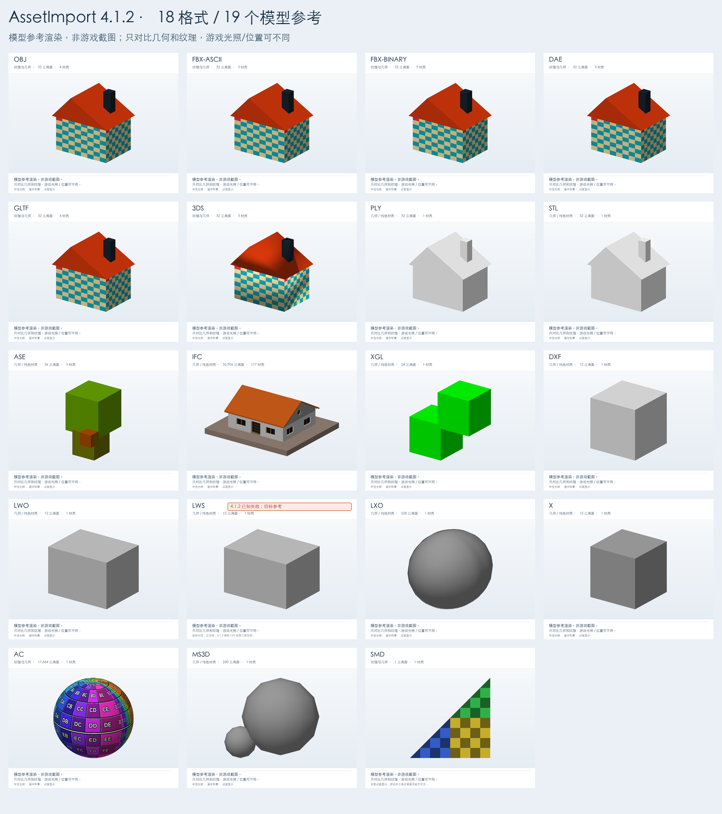

适合当前使用 4.0.3 的环境，作为比较基线。
打开 ME 4.0.3 安装包同一个 AssetImport DLL，仅替换为官方 ME 5.0。
打开 ME 5.0 安装包KK_AssetImport.dll 和 KK_MaterialEditor.dll 移到 BepInEx/plugins 以外。仅重命名或放进 plugins 子目录仍可能重复加载。Koikatu.exe 的游戏根目录。不要把整套测试包放进 plugins。BepInEx/LogOutput.log，确认 AssetImport 4.1.2 和所选 ME 均成功加载。在解压目录里运行，需 Windows x64 与 .NET Framework 4.6.2+。不启动游戏。
结果：Reports/ModelCheck_时间戳 内的 CSV、LOG、JSON。
每例分 file 和 plugin-io 两条：直接读取文件，与模拟插件的文件缓存 / 内存导入。PASS 不代表 Unity 渲染或 ME 保存通过。
默认 LeftAlt+I 打开导入。Studio 建空场景；Maker 先选择可替换的普通饰品槽。
对照模型形状、纹理，修改 ME 材质，保存并重载场景 / 角色卡 / 服装卡。
查看操作顺序与保存测试 · 打开 76 项结果表打开全部 19 例的参考页 → 包括建议比例、模型入口和注意事项。
以下为真实模型数据的离线参考渲染，不是 KK 游戏截图。主要对比几何、纹理和部件；游戏 shader、光照和相机不同，亮度不要求一致。PLY / STL 没有贴图，白色默认材质正常。

结果放在本包 CollectedLogs 下。收集器生成本地 ZIP，不会自动上传，不复制角色卡和模型。原始日志可能含文件路径，回传前可查看。
| 文件 | 位置（相对游戏根目录） |
|---|---|
| 首选 BepInEx 日志 | BepInEx/LogOutput.log |
| KK Unity 日志 | Koikatu_Data/output_log.txt |
| Studio Unity 日志 | CharaStudio_Data/output_log.txt |
| 本插件配置 | BepInEx/config/org.njaecha.plugins.assetimport.cfg |
回传：日志 ZIP + 填好的 TestResults.csv + 错误截图；运行过预检时，再附 Reports 中对应文件夹。
先收集再重启 / 切换环境，避免日志被下一轮覆盖。查看常见报错与缺失日志说明